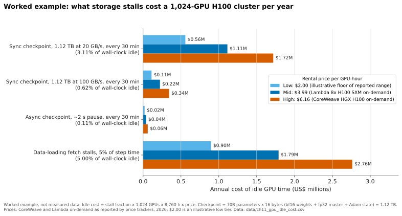
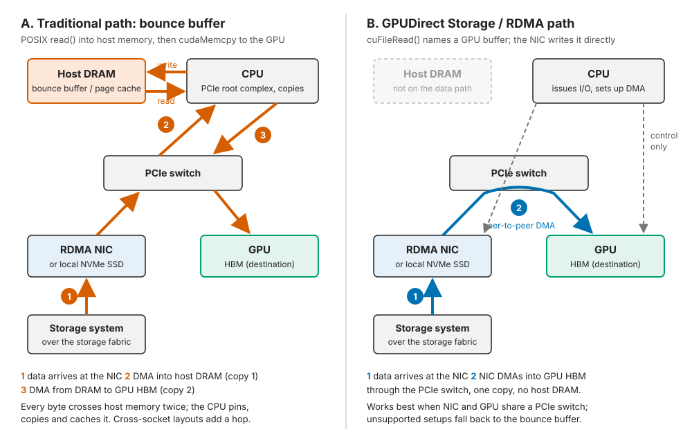

11. The GPU data path¶
Depth: L2 · Reading time: ~10 min · Last verified: 2026-11-01 Prerequisites: Block protocols and NVMe-oF · File protocols · Datacenter networking for storage · Performance and economics metrics
TL;DR¶
- The GPU is the expensive asset; storage's job is to keep it busy. At US$2.00–6.16 per H100-hour, each second a 1,024-GPU cluster waits on I/O costs US$0.57–1.75. Storage earns its keep through utilization, not its own price.
- GPUDirect Storage (GDS) removes the CPU "bounce buffer". The NIC or SSD writes straight into GPU memory over PCIe, freeing CPU and DRAM bandwidth. It raises the per-node ceiling; it does not make the storage system faster.
- Most LLM training is compute-bound. A 70B model on 1,024 GPUs reads a few MB/s of tokens. Storage matters in bursts: checkpoints, restores, multimodal loading and inference KV-cache loads.
- Know the stack. Magnum IO is the umbrella, GPUDirect RDMA the primitive, cuFile the GDS API, NIXL the inference transfer library, Dynamo the orchestrator that calls NIXL.
- GDS is table stakes. Nearly every AI storage vendor, including Everpure's FlashBlade//S, claims it. Deals turn on aggregate throughput, checkpoint behaviour and KV-cache integration.
Why this matters for Everpure strategy¶
In AI deals the largest line item is GPUs, so storage is sold as "we keep your US$50 million of GPUs busy", not "we are cheaper per terabyte". Every vendor therefore stakes out the GPU data path: GDS certification, RDMA protocols and now NIXL plugins for KV cache. Failing these checks costs a place in NVIDIA reference architectures (Chapter 34); passing them wins nothing by itself.
The path has moved from bulk file reads (GDS, 2019–2021) to object over RDMA (2024–2025) to latency-sensitive KV-cache tiers orchestrated by Dynamo (2025–2026). That last step makes storage part of inference serving, which is recurring spend, and it is where Everpure's PureKVA, WEKA's Augmented Memory Grid and DDN's Infinia now compete (Chapter 32).
Core concepts¶
"Keep the GPU fed" is the whole game¶
A GPU cluster is a fab: a fixed-cost machine whose margin is set by utilization. Its cost accrues by the hour whether or not it computes, and storage, a small share of capex, can idle all of it. CoreWeave lists an 8× HGX H100 node at US$49.24 per hour, or US$6.16 per GPU-hour1. Specialist clouds and marketplaces span roughly US$1.49 to US$6.982. A 1,024-GPU cluster at US$3.99 per GPU-hour, Lambda's 2026 on-demand 8× H100 rate as reported by several price trackers3 [VERIFY: Lambda's own pricing page has also shown US$2.99], costs 1,024 × 3.99 = US$4,086 per hour, or about US$35.8 million a year. One percent idle is US$358,000 a year.
At scale, a large share of idle time comes from interruptions. Meta's Llama 3 run on 16,384 H100s logged 466 interruptions in 54 days yet exceeded 90% effective training time, partly by cutting job-startup and checkpoint time4. Each interruption reloads the last checkpoint, so storage sets the restart cost.
Where storage actually stalls a GPU¶
Steady-state LLM training needs far less bandwidth than people assume. Take a 70B dense model on 1,024 H100s. At 40% utilization of the ~989 dense BF16 TFLOPS of an H100, the cluster processes about 1,024 × 989×10¹² × 0.4 ÷ (6 × 70×10⁹) ≈ 0.96 million tokens per second. At ~4 bytes per token ID, that is ~4 MB/s for the whole cluster. Any NAS serves that; GDS does nothing for it. Storage stalls GPUs in four places:
- Checkpoint saves. With Adam in mixed precision, the full training state is about 16 bytes per parameter: bf16 weights (2) and gradients (2), fp32 master weights (4) and two fp32 Adam moments (4 + 4). Gradients are usually not saved, so a real checkpoint is closer to 14 bytes per parameter (Chapter 31 walks through the variants); this example uses 16 as a round upper bound. A 70B model therefore checkpoints up to 70×10⁹ × 16 = 1.12 TB. Written synchronously at 20 GB/s, that takes 56 s. Every 30 minutes, that is 3.1% of wall-clock time spent idle.
- Checkpoint restores. Every GPU reads its shard at once, the burstiest read storage sees.
- Multimodal data loading. Samples are megabytes. For many vision and audio models, Mohan et al. found training time dominated by "data stalls" (fetch plus pre-processing)5.
- Inference KV-cache loads. A Llama 3 70B token needs 80 layers × 8 KV heads × 128 dimensions × 2 (key and value) × 2 bytes ≈ 320 KiB of KV cache4. A 32K-token context is ~10.7 GB, and fetching it must beat recomputing ~2 × 70×10⁹ × 32,768 ≈ 4.6×10¹⁵ FLOPs (a second or more even on eight GPUs). The load is latency-critical and repeats for every returning user (Chapter 32).

Figure 11.1 — Worked example: storage stalls cost seven figures a year on a mid-sized cluster, but software (async checkpointing) removes more of that cost than faster hardware does.
Data: data/ch11_gpu_idle_cost.csv
The nuance: raising checkpoint bandwidth from 20 to 100 GB/s saves ~US$0.9 million a year at mid-tier pricing, but asynchronous checkpointing saves nearly all of it in software. GPUs copy state to host DRAM in a second or two and keep training while the CPU drains it, so storage need only absorb the checkpoint within the interval. Chapter 31 works through the 405B and 1T cases.
The traditional path: the bounce buffer¶
On a standard Linux server, read() lands data in host DRAM (page cache or a pinned staging buffer); cudaMemcpy then moves it to GPU high-bandwidth memory (HBM). Each byte crosses the memory bus twice, and the CPU pays for system calls, copies and cache management.

Figure 11.2 — GPUDirect replaces two trips through host DRAM with one peer-to-peer DMA across the PCIe switch; the CPU keeps control but stops touching data.
Worked example (why the bounce buffer bites). Give a GPU node 200 GB/s of storage-facing network, for example four 400 Gb/s ports. Bounce-buffering 200 GB/s generates about 400 GB/s of DRAM traffic. A dual-socket server with eight channels of DDR5-4800 per socket has 2 × 8 × 38.4 ≈ 614 GB/s of theoretical peak. Staging copies would consume about two-thirds of it, competing with data-loader processes; if NIC and GPU sit on different sockets, every byte also crosses the inter-socket link. It is the classic case for peer-to-peer DMA past the host bridge: stop using scarce memory bandwidth as a transit lounge.
NVIDIA's original GDS write-up made the point at system scale: on a DGX-2, CPU memory could feed GPUs at ~50 GB/s, while drives and NICs reaching GPUs directly could aggregate to nearly 200 GB/s6.
GPUDirect RDMA and GPUDirect Storage¶
GPUDirect RDMA is the primitive: the GPU exposes a window of its memory on PCIe, nvidia-peermem registers it with the RDMA stack, and a NIC DMAs straight into HBM. NCCL moves gradients this way (Chapter 10).
GPUDirect Storage applies it to file and block I/O. The application calls cuFile (cuFileRead with a GPU buffer instead of read); the file-system client turns the offset into a storage request with a GPU address as DMA target; the NIC or local NVMe SSD writes directly into GPU memory7.
sequenceDiagram
participant A as App on CPU
participant K as FS client
participant H as Host DRAM
participant N as RDMA NIC
participant S as Storage
participant G as GPU HBM
Note over A,G: Traditional path
A->>K: read 64 MB into host buffer
K->>S: request over fabric
S->>N: data
N->>H: DMA into bounce buffer
K-->>A: read complete
A->>G: cudaMemcpy host to device
H->>G: second copy over PCIe
Note over A,G: GPUDirect Storage path
A->>K: cuFileRead into GPU buffer
K->>S: request tagged with GPU address
S->>N: data
N->>G: RDMA write straight into HBM
K-->>A: complete with no host copyFigure 11.3 — The two paths issue the same storage request; GDS changes only where the bytes land, which is why it needs file-system client support but not a new storage protocol.
GDS's limits, which engineers will expect you to know:
- The array's ceiling does not move. GDS raises what one client absorbs; a 100 GB/s array still delivers 100 GB/s.
- Topology matters. Gains are largest when NIC or SSD and GPU share a PCIe switch; unsupported setups fall back to a bounce-buffer "compatibility mode"7.
- The client must support it. NFS over RDMA, Lustre, WekaFS, IBM Storage Scale and BeeGFS clients do; NFS over TCP does not.
- Data must arrive GPU-ready. CPU-side JPEG decode or augmentation forces a trip through host memory anyway. GDS helps when the GPU decodes (e.g., DALI) or the bytes are already tensors, as with checkpoints and KV blocks.
The layer stack: Magnum IO, cuFile, NIXL and Dynamo¶
The names nest; confusing them loses an engineer fast.
flowchart TB
subgraph APP["Frameworks"]
PT["PyTorch and data loaders"]
INF["vLLM, SGLang, TensorRT-LLM"]
end
subgraph ORCH["Inference orchestration"]
DYN["Dynamo: KV-aware routing, KVBM tiers"]
end
subgraph LIB["Transfer libraries"]
NIXL["NIXL: KV and tensor moves"]
CUF["cuFile API = GDS"]
CUO["cuObject: S3 over RDMA"]
NCCL["NCCL: GPU collectives"]
end
subgraph DRV["Primitives and drivers"]
RDMA["GPUDirect RDMA, nvidia-peermem"]
UCX["UCX and libfabric"]
NVFS["nvidia-fs, POSIX fallback"]
end
subgraph HW["Hardware and storage"]
NIC["ConnectX or BlueField NICs, PCIe switches"]
ST["File, NVMe-oF and object storage"]
end
INF --> DYN
DYN --> NIXL
PT --> CUF
PT --> NCCL
NIXL --> UCX
NIXL --> CUF
NIXL --> CUO
CUF --> NVFS
CUF --> RDMA
CUO --> RDMA
NCCL --> RDMA
UCX --> RDMA
RDMA --> NIC
NVFS --> ST
NIC --> ST
classDef mio fill:#E6F0F8,stroke:#0072B2,stroke-width:2px
class CUF,NCCL,RDMA,UCX,NVFS,CUO mioFigure 11.4 — Magnum IO, shaded blue, is the I/O plumbing; NIXL and Dynamo sit above it for inference, so a storage vendor's integration point has moved up from "GDS-capable file system" to "NIXL backend".
- Magnum IO is NVIDIA's umbrella for GPU I/O software (GPUDirect RDMA, GDS, NCCL, NVSHMEM, UCX), launched at SC19 in November 2019 with GDS in early access8. GDS 1.0 followed in 2021 with about a dozen storage partners9.
- cuFile is the GDS API that data loaders and checkpoint writers call instead of POSIX.
- cuObject does the same for S3: control stays in S3 calls, payload moves over RDMA; client SDK and object server both need changes10.
- NIXL is an open-source (Apache 2.0) point-to-point library that moves KV blocks and tensors between GPU memory, CPU memory and storage via plug-ins including UCX, POSIX, GDS, object, Azure Blob, 3FS, Mooncake and libfabric11.
- Dynamo is NVIDIA's open-source inference framework. Its KV Block Manager (KVBM) tiers KV cache across HBM (G1), host DRAM (G2), local SSD (G3) and remote storage (G4), with disk I/O through NIXL, using GDS where available12. Dynamo 1.0 shipped 2026-03-1613.
Semiconductor bridge: Magnum IO is the DMA engine and bus fabric, cuFile and NIXL the driver API, and Dynamo the memory controller's page policy, deciding what stays in "HBM" and what is evicted to "flash".
How Everpure approaches it vs. competitors¶
| Vendor / system | GPU-direct path claimed | Inference / KV integration | Notes |
|---|---|---|---|
| DDN EXAScaler (Lustre) | GDS, listed in NVIDIA partner tables since early releases14 | Dynamo/NIXL KV cache on EXAScaler and Infinia (June 2026)15 | Kernel Lustre client; HPC heritage |
| WEKA NeuralMesh (WekaFS) | GDS since 1.014 | Augmented Memory Grid over RDMA and GDS; open-sourced a NIXL plugin16 | Own kernel-bypass client |
| VAST Data | GDS via NFS over RDMA14 | Dynamo integration [VERIFY: VAST NIXL backend status] | Standard NFS client with RDMA and multipath |
| IBM Storage Scale | GDS (5.1.2 and newer)14 | — | GPFS client |
| NetApp ONTAP | GDS via NFS over RDMA; 171 GiB/s in an eight-node demo (company-stated)17 | — | AFX disaggregated line (2025) |
| Dell PowerScale | GDS via NFS over RDMA (OneFS 9.2 and newer)14 | — | pNFS "Lightning" variant (2025) |
| Everpure FlashBlade//S | GDS over NFS over RDMA, reported from Purity//FB 4.3.4 (October 2023)1819 [VERIFY: search-summary only; not seen in NVIDIA GDS release-note partner tables] | PureKVA: KV cache on FlashBlade over NFS and S3, Dynamo integration, RDMA into GPU memory20 | S3 over RDMA announced for the object store21 |
| Everpure FlashBlade//EXA | NFSv3 over RDMA data path to data nodes22; Portworx documents GDS on EXA file systems over RDMA NFS23 [VERIFY: search-summary only] | Via PureKVA [VERIFY: EXA support] | NVIDIA certification of EXA still in progress as of March 2026 (Chapter 34) |
| Hammerspace | GDS validation (company-stated, 2024)24 | — | NFS-based global namespace |
| AWS FSx for Lustre | GDS with EFA (Nov 2024)25 | — | First major cloud file service with GDS |
| Cloudian HyperStore | GPUDirect for object, S3 over RDMA (Nov 2024)26 | — | Object-first |
Table 11.1 — Every serious AI storage vendor claims a GPU-direct path; the competitive frontier has moved to S3 over RDMA and KV-cache integration with Dynamo and NIXL.
The real trade-off is client architecture, not GDS. WEKA, DDN (Lustre) and IBM ship their own clients that open many RDMA connections per node and stripe across servers, giving the highest per-node throughput at the price of a kernel module to qualify on every GPU server. Everpure, VAST, NetApp and Dell use the standard Linux NFS client over RDMA: nothing to install, historically less per-client parallelism. FlashBlade//EXA narrows the gap with pNFS, sending clients directly to data nodes over NFSv3 on RDMA22 (Chapter 16).
Steelman the proprietary clients: on a 2,000-GPU checkpoint restore, per-node absorption and client striping set time-to-resume. Steelman the standard clients: operators of thousands of heterogeneous GPU servers save real effort by not qualifying a client, and compute-bound training rarely hits per-node peak.
Options a strategy team might evaluate, based on public information: upstreaming a FlashBlade NIXL backend (WEKA open-sourced one), bringing S3 over RDMA and cuObject compatibility to EXA, and positioning PureKVA on latency versus capacity economics once NVIDIA's BlueField-4 STX/CMX context-memory tier ships27.
History and trajectory¶
timeline
title The GPU data path
2019 : Magnum IO launched at SC19 : GDS in early access
2021 : GDS 1.0 with a dozen storage partners
2024 : FSx for Lustre adds GDS : GPUDirect for object storage over S3 RDMA
2025 : Dynamo and NIXL arrive : FlashBlade EXA uses NFSv3 over RDMA data path : WEKA AMG ships with NIXL plugin
2026 : Dynamo 1.0 in production : BlueField-4 STX and CMX context memory : DDN KV cache via DynamoFigure 11.5 — The GPU data path moved from bulk file reads to object over RDMA to latency-critical KV-cache tiers in about six years.
GPUDirect RDMA dates from Kepler-class GPUs and CUDA 5.0 (2012)28; GDS carried it into storage. Pure Storage said in 2022 that FlashBlade//S would support GDS the following year29 [VERIFY: search-summary only], and trade press reports support arriving with Purity//FB 4.3.4 in October 202319. Dynamo, announced at GTC on 18 March 202530, reached 1.0 in March 202613.
Three trends point forward. Object over RDMA: cuObject standardizes S3 over RDMA10, and Cloudian26 and Everpure21 have announced it, eroding the "file for performance, object for capacity" split (Chapter 9). A context-memory tier: NVIDIA's BlueField-4 STX and CMX (GTC 2026) put KV-cache storage inside each pod, with Everpure, DDN, VAST, WEKA, NetApp and others as partners27; whoever supplies the software decides whether that commoditizes hardware or opens a new socket. GPU-initiated I/O: research systems let GPU threads issue NVMe commands without the CPU, which would move the storage client into the GPU.
Numbers that matter¶
| Metric | Value | Context | Source / date |
|---|---|---|---|
| H100 on-demand price, CoreWeave | US$6.16 / GPU-hour (US$49.24 per 8-GPU node) | Top of the market range | CoreWeave pricing1, 2026 |
| H100 rental range | US$1.49–6.98 / GPU-hour | 15+ providers | Intuition Labs2, 2026 |
| Llama 3 effective training time | >90%, despite 466 interruptions in 54 days | 16,384 H100s | Meta4, 2024-07 |
| DGX-2 CPU-memory-to-GPU limit vs direct aggregate | ~50 GB/s vs ~200 GB/s | Original GDS case | NVIDIA blog6, 2019 |
| NetApp ONTAP GDS read throughput | 171 GiB/s, eight-node cluster | Company-stated, gdsio | NetApp17 |
| 70B Adam checkpoint | ≤1.12 TB (≤16 B/parameter; ~0.98 TB at 14 B) | 56 s at 20 GB/s; 11 s at 100 GB/s | Worked example |
| Text-token input for 70B on 1,024 H100s | ~4 MB/s cluster-wide | Why LLM training is compute-bound | Worked example |
| Llama 3 70B KV cache | ~320 KiB per token; ~10.7 GB per 32K context | Drives inference KV loads | Worked example from Meta architecture4 |
| Idle cost, 1,024 H100s at US$3.99 | ~US$358k per 1% idle per year | Utilization economics | Worked example |
Conversation playbook¶
Questions for a PM
- "In our last five lost AI deals, did GPU data path features decide it, or aggregate throughput and price?" Strong: separates checkbox items (GDS, certification) from deciding factors, with named cases.
- "What is PureKVA's measured time-to-first-token gain versus recompute and versus local NVMe, and on which model and context length?" Strong: gives model, context, concurrency and network, separates vendor from customer numbers, and says where the benefit vanishes.
- "Where does FlashBlade sit relative to Dynamo's G3 and G4 tiers and NVIDIA's CMX tier?" Strong: says whether Everpure competes with, supplies or sits behind CMX, and the revenue-per-GPU effect.
Questions for an engineer
- "With GDS on FlashBlade, what single-node read rate do we reach on a current HGX node, and what limits it: NIC, NFS client concurrency or the array?" Strong: a GB/s figure, the named bottleneck, and the
nconnect/multipath settings. - "How does a 4,000-GPU checkpoint restore behave: per-node rate, metadata load, time to resume?" Strong: time-to-resume, not peak bandwidth, including the open/stat storm on thousands of shard files.
- "Do we ship a NIXL backend, and is it the POSIX, GDS or OBJ plugin path?" Strong: the plugin, whether it is upstream, and block size and latency per KV fetch.
Don't say this:
- "GDS makes storage faster." It removes a host copy; array throughput is unchanged.
- "LLM training needs huge read bandwidth." Text needs MB/s; bursts come from checkpoints, restores and multimodal data.
- "Magnum IO is a product you buy." It is a family of free NVIDIA libraries.
- "NIXL is a storage protocol." It is a transfer library; underneath sit UCX/RDMA, POSIX, GDS or S3.
- "Having GDS is a differentiator." Almost every vendor in Table 11.1 has it.
Going deeper (optional, L3 pointers)¶
- NVIDIA GDS Overview, Design and Best Practices guides: topology rules, compatibility mode,
gdsio, alignment7. - The NIXL repository and Dynamo's KVBM design document: plugins, memory registration, G1–G4 policy1112.
- Mohan et al., "Analyzing and Mitigating Data Stalls in DNN Training," PVLDB 2021, on fetch versus pre-processing stalls5.
- On GPU-initiated storage access: Qureshi et al., the BaM system (ASPLOS 2023).
Key terms¶
- Bounce buffer — host-memory staging on the way to the GPU.
- GPUDirect RDMA / GDS / cuFile — NIC or storage DMA into GPU memory, and the GDS API.
- Magnum IO — NVIDIA's GPU I/O library umbrella.
- NIXL / Dynamo / KVBM — inference transfer library, inference framework, KV tier manager.
- cuObject — NVIDIA's S3-over-RDMA libraries.
- See the glossary for the rest.
Sources¶
-
CoreWeave, "Pricing," n.d. (2026); 8× HGX H100 on-demand US$49.24/hr as reported consistently by multiple price trackers. https://www.coreweave.com/pricing (retrieved 2026-11-01). ↩↩
-
Intuition Labs, "H100 Rental Prices Compared: $1.49–$6.98/hr Across 15+ Cloud Providers (2026)," 2026. https://intuitionlabs.ai/articles/h100-rental-prices-cloud-comparison (retrieved 2026-11-01). ↩↩
-
Spheron, "Lambda Cloud H100 pricing 2026," 2026-05. https://www.spheron.network/blog/lambda-cloud-h100-pricing-2026/ (retrieved 2026-11-01). ↩
-
Llama Team, AI @ Meta, "The Llama 3 Herd of Models," arXiv:2407.21783, 2024-07-31. https://arxiv.org/abs/2407.21783 (retrieved 2026-11-01). ↩↩↩↩
-
J. Mohan, A. Phanishayee, A. Raniwala, V. Chidambaram, "Analyzing and Mitigating Data Stalls in DNN Training," PVLDB 14, 2021. https://www.cs.utexas.edu/~vijay/papers/vldb21-datastalls.pdf (retrieved 2026-11-01). ↩↩
-
NVIDIA Developer Blog, "GPUDirect Storage: A Direct Path Between Storage and GPU Memory," 2019. https://developer.nvidia.com/blog/gpudirect-storage/ (retrieved 2026-11-01). ↩↩
-
NVIDIA, "GPUDirect Storage Overview Guide," n.d. https://docs.nvidia.com/gpudirect-storage/overview-guide/index.html (retrieved 2026-11-01). ↩↩↩
-
NVIDIA Newsroom, "NVIDIA Launches Magnum IO Software Suite to Help Eliminate Data Bottlenecks for Data Scientists and AI, HPC Researchers," 2019-11-18. https://nvidianews.nvidia.com/news/nvidia-launches-magnum-io-software-suite-to-help-eliminate-data-bottlenecks-for-data-scientists-and-ai-hpc-researchers (retrieved 2026-11-01). ↩
-
Blocks & Files, "GPUDirect Storage hitting the streets to VAST acclaim," 2021-06-28. https://www.blocksandfiles.com/file/2021/06/28/gpudirect-storage-hitting-the-streets-to-vast-acclaim/1611092 (retrieved 2026-11-01). ↩
-
NVIDIA, "NVIDIA cuObject: Accelerated CUDA libraries for Object Storage," n.d. https://docs.nvidia.com/gpudirect-storage/cuobject (retrieved 2026-11-01). ↩↩
-
NVIDIA / ai-dynamo, "NIXL: NVIDIA Inference Xfer Library" (GitHub repository), n.d. https://github.com/ai-dynamo/nixl (retrieved 2026-11-01). ↩↩
-
NVIDIA, "KVBM design," Dynamo documentation v1.3.0, n.d. https://docs.nvidia.com/dynamo/v1.3.0/design-docs/component-design/kvbm-design.md (retrieved 2026-11-01). ↩↩
-
NVIDIA Newsroom, "NVIDIA Enters Production With Dynamo, the Broadly Adopted Inference Operating System for AI Factories," 2026-03-16. https://nvidianews.nvidia.com/news/dynamo-1-0 (retrieved 2026-11-01). ↩↩
-
NVIDIA, "GPUDirect Storage Release Notes," n.d. (partner and version tables across releases). https://docs.nvidia.com/gpudirect-storage/release-notes/index.html (retrieved 2026-11-01). ↩↩↩↩↩
-
Blocks & Files, "DDN launches faster array HW and KV cache SW for AI," 2026-06-24. https://www.blocksandfiles.com/ai-ml/2026/06/24/ddn-launches-faster-array-hw-and-kv-cache-sw-for-ai/5261447 (retrieved 2026-11-01). ↩
-
WEKA, "WEKA Breaks The AI Memory Barrier With Augmented Memory Grid on NeuralMesh," 2025-11-18. https://www.weka.io/news/weka-breaks-the-ai-memory-barrier-with-augmented-memory-grid (retrieved 2026-11-01). ↩
-
NetApp (D. Arnette), "ONTAP reaches 171GiBps with GPUDirect Storage," n.d. (c. 2023, ONTAP 9.12.1). https://www.netapp.com/blog/ontap-reaches-171-gpudirect-storage/ (retrieved 2026-11-01). ↩↩
-
Everpure, "FlashBlade//S," product page, n.d. https://www.purestorage.com/products/unstructured-data-storage/flashblade-s.html (retrieved 2026-11-01). ↩
-
iThome (Taiwan), overview of GPUDirect Storage support among storage vendors (Pure Storage FlashBlade//S: NFS over RDMA, Purity//FB 4.3.4 or later, from October 2023), n.d. https://www.ithome.com.tw/tech/165670 (retrieved 2026-11-01; search-summary only, host not fetchable). ↩↩
-
StorageReview, "Everpure Adds PureKVA to FlashBlade, Claims Up to 20x Faster Time to First Token, and Makes DeepReduce Always-On," 2026. https://www.storagereview.com/news/everpure-purekva-flashblade-20x-time-to-first-token-always-on-deepreduce (retrieved 2026-11-01). ↩
-
Everpure blog, "FlashBlade Augments its Fast Object Store with S3 over RDMA for AI/ML Workflows," n.d. https://blog.everpuredata.com/purely-technical/pure-storage-flashblade-fast-object-store-s3-rdma-for-ai-ml-workflows/ (retrieved 2026-11-01). ↩↩
-
Blocks & Files, "How Pure Storage developed its disaggregated FlashBlade//EXA system," 2025-04-17. https://blocksandfiles.com/2025/04/17/how-pure-storage-developed-its-disaggregated-flashblade-exa-system/ (retrieved 2026-11-01). ↩↩
-
Portworx, "Enable the FlashArray and FlashBlade driver" (FlashBlade//EXA file systems with GPUDirect Storage over RDMA NFS), n.d. https://docs.portworx.com/portworx-enterprise/platform/configure-portworx-components/enable-fa-fb-driver (retrieved 2026-11-01; search-summary only, host not fetchable). ↩
-
StorageNewsletter, "Hammerspace Hyperscale NAS Achieves GPUDirect Storage Self-Certification from Nvidia," 2024. https://storagenewsletter.com/?p=274109 (retrieved 2026-11-01). ↩
-
AWS, "Amazon FSx for Lustre now supports Elastic Fabric Adapter and NVIDIA GPUDirect Storage," 2024-11. https://aws.amazon.com/about-aws/whats-new/2024/11/amazon-fsx-lustre-elastic-fabric-adapter-nvidia-gpudirect-storage (retrieved 2026-11-01). ↩
-
IT Brief, "Cloudian enhances AI processing with NVIDIA GPUDirect tie-up," 2024-11. https://itbrief.co.uk/story/cloudian-enhances-ai-processing-with-nvidia-gpudirect-tie-up (retrieved 2026-11-01). ↩↩
-
NVIDIA Investor Relations, "NVIDIA Launches BlueField-4 STX Storage Architecture With Broad Industry Adoption," 2026-03-16. https://investor.nvidia.com/news/press-release-details/2026/NVIDIA-Launches-BlueField-4-STX-Storage-Architecture-With-Broad-Industry-Adoption/default.aspx (retrieved 2026-11-01). ↩↩
-
NVIDIA, "GPUDirect RDMA" (CUDA 5.0 documentation, v0.2 draft), 2012. https://developer.download.nvidia.com/compute/cuda/5_0/rc/docs/GPUDirect_RDMA.pdf (retrieved 2026-11-01; search-summary only). ↩
-
Blocks & Files, "Pure extends FlashBlade with more capacity and faster compute," 2022-06-08. https://www.blocksandfiles.com/file/2022/06/08/pure-extends-flashblade-with-more-capacity-and-faster-compute/1607994 (retrieved 2026-11-01). ↩
-
NVIDIA Investor Relations, "NVIDIA Dynamo Open-Source Library Accelerates and Scales AI Reasoning Models," 2025-03-18. https://investor.nvidia.com/news/press-release-details/2025/NVIDIA-Dynamo-Open-Source-Library-Accelerates-and-Scales-AI-Reasoning-Models/default.aspx (retrieved 2026-11-01). ↩